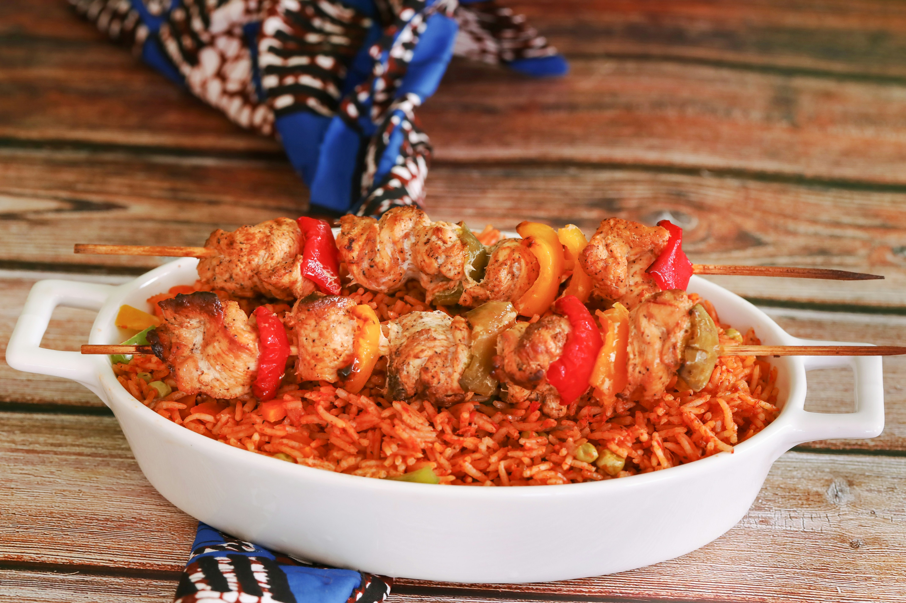

Our Signature Dishes

POUNDED YAM
Pounded yam and Egusi with different Protein
#10,500
Jollof Rice
Jollof Rice and Beef with seasonal greens.
#9,500Hand-crafted meals using locally sourced organic ingredients.
View Our Menu
Pounded yam and Egusi with different Protein
#10,500
Jollof Rice and Beef with seasonal greens.
#9,500
At Koray's Cafe, we believe that food is a universal language, but Jollof is its most soulful dialect. Our journey started in a small kitchen in Ondo State, fueled by a passion for spices that tell a story.
From our slow-simmered Egusi soup to our flame-grilled Beef, every dish is prepared using traditional techniques and locally sourced ingredients. We don't just serve meals; we serve memories of home.